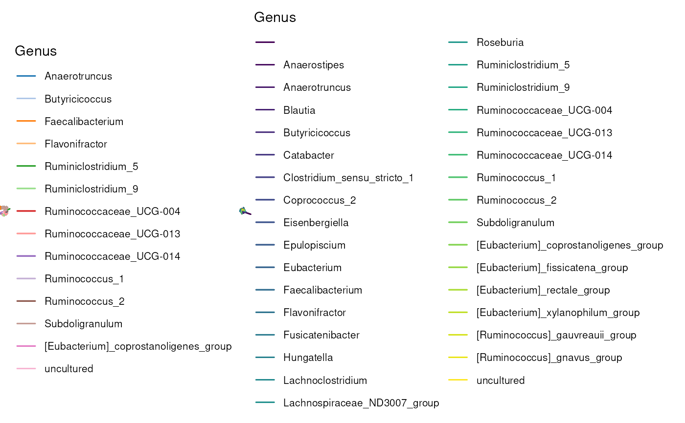

R/AllGenerics.R, R/applyByModule.R
applyByModule.RdapplyByModule provides a convenient method to apply the same operation on multiple, possibly overlapping groups of features or samples, representing for example functional microbial modules or sample categories, respectively.
applyByModule(x, ...)
# S4 method for class 'SummarizedExperiment'
applyByModule(
x,
.by,
.group,
FUN,
min.group.size = NULL,
meta.name = "mod_res",
...
)A SummarizedExperiment object.
Additional arguments passed to FUN.
Character scalar. Whether .group information pertains
the "rows" or "cols" of x.
Character vector. Names of the groups or modules by which
FUN is applied.
Function scalar. A function which takes x as the
first argument and ... as additional arguments. To update x
in place, use get and not add functions, as the latter will
populate the altExp slot.
Numeric scalar. The minimum number of
features or samples in a group for FUN to be applied.
(Default: NULL)
Character scalar. The name of the metadata
slot where results are stored. (Default: "mod.res")
x updated with results stored in the appropriate slot
depending on the given FUN.
It is recommended to use get* functions to store results in the
appropriate slot of x, whereas using the add* functions applied
to features will save the results as separate experiments in the altExp slot.
In summary, function results are stored as follows:
colData: getAlpha, getDominance, getPrevalence, getCluster
reducedDims: getMDS, getNMDS, getCCA, getRDA, getLDA, getNMF, getDPCoA, calculatePCA
altExps: transformAssay and add* functions
metadata: all else (miaViz ggplot2 objects, statistical summaries, etc.)
library(bluster)
library(miaViz)
#> Loading required package: ggraph
#>
#> Attaching package: ‘miaViz’
#> The following object is masked from ‘package:scater’:
#>
#> plotHeatmap
#> The following object is masked from ‘package:mia’:
#>
#> plotNMDS
library(patchwork)
# Import dataset
data("Tengeler2020", package = "mia")
tse <- Tengeler2020
# Compute alpha diversity indices for each Order
tse <- applyByModule(
tse,
.by = "rows",
.group = "Order",
FUN = getAlpha,
index = c("shannon", "faith"),
min.group.size = 2
)
# View colData names for alpha diversity results
names(colData(tse))
#> [1] "patient_status" "cohort"
#> [3] "patient_status_vs_cohort" "sample_name"
#> [5] "shannon_Bacteroidales" "faith_Bacteroidales"
#> [7] "shannon_Clostridiales" "faith_Clostridiales"
#> [9] "shannon_Enterobacteriales" "faith_Enterobacteriales"
#> [11] "shannon_Erysipelotrichales" "faith_Erysipelotrichales"
#> [13] "shannon_Verrucomicrobiales" "faith_Verrucomicrobiales"
# Compute beta diversity measures for each Order
tse <- applyByModule(
tse,
.by = "rows",
.group = "Order",
FUN = getMDS,
method = "unifrac",
min.group.size = 2
)
# View reducedDim names for beta diversity results
reducedDimNames(tse)
#> [1] "Bacteroidales" "Clostridiales" "Enterobacteriales"
#> [4] "Erysipelotrichales" "Verrucomicrobiales"
# Transform assay for each Order, storing results as altExps
tse <- applyByModule(
tse,
.by = "rows",
.group = "Order",
FUN = transformAssay,
method = "clr",
pseudocount = TRUE
)
# View altExp names for newly transformed assays
altExpNames(tse)
#> [1] "Bacteroidales" "Clostridiales" "Enterobacteriales"
#> [4] "Erysipelotrichales" "Gastranaerophilales" "Oceanospirillales"
#> [7] "Verrucomicrobiales"
# Create two example microbial modules
rowData(tse)$Mod1 <- rowData(tse)$Family == "Ruminococcaceae"
rowData(tse)$Mod2 <- rowData(tse)$Order == "Clostridiales"
# Find sample-wise most dominant genus for each module
tse <- applyByModule(
tse,
.by = "rows",
.group = c("Mod1", "Mod2"),
FUN = getDominant,
group = "Genus"
)
# View colData names for dominance results
names(colData(tse))
#> [1] "patient_status" "cohort"
#> [3] "patient_status_vs_cohort" "sample_name"
#> [5] "shannon_Bacteroidales" "faith_Bacteroidales"
#> [7] "shannon_Clostridiales" "faith_Clostridiales"
#> [9] "shannon_Enterobacteriales" "faith_Enterobacteriales"
#> [11] "shannon_Erysipelotrichales" "faith_Erysipelotrichales"
#> [13] "shannon_Verrucomicrobiales" "faith_Verrucomicrobiales"
#> [15] "dominant_Mod1" "dominant_Mod2"
# Cluster samples by features for each module
tse <- applyByModule(
tse,
.by = "rows",
.group = c("Mod1", "Mod2"),
FUN = getCluster,
assay.type = "counts",
by = "cols",
BLUSPARAM = KmeansParam(centers = 3)
)
# View colData names for clustering results
names(colData(tse))
#> [1] "patient_status" "cohort"
#> [3] "patient_status_vs_cohort" "sample_name"
#> [5] "shannon_Bacteroidales" "faith_Bacteroidales"
#> [7] "shannon_Clostridiales" "faith_Clostridiales"
#> [9] "shannon_Enterobacteriales" "faith_Enterobacteriales"
#> [11] "shannon_Erysipelotrichales" "faith_Erysipelotrichales"
#> [13] "shannon_Verrucomicrobiales" "faith_Verrucomicrobiales"
#> [15] "dominant_Mod1" "dominant_Mod2"
#> [17] "cluster_Mod1" "cluster_Mod2"
# Plot tree for each module, specifying metadata name
tse <- applyByModule(
tse,
.by = "rows",
.group = c("Mod1", "Mod2"),
FUN = plotRowTree,
edge.colour.by = "Genus",
meta.name = "tree_plots"
)
# Visualize module-wise abundance plots
metadata(tse)$tree_plots |>
wrap_plots()
